MedEasy
UI / UX Design
Start mission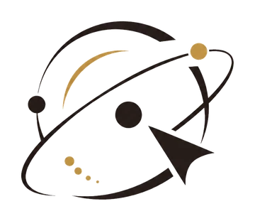
I work across interface design and front-end prototyping, with a focus on reducing uncertainty in digital, physical and service experiences.
Skills And Tools
0 / 7 unlocked
Position Statement

Hi, my name is Ziqi Liu, and you can call me Queenie. I am a Sydney-based interaction design student who enjoys turning new ideas into clear and visually engaging digital experiences.
My practice sits between user research, prototyping, and visual storytelling. I am interested in everyday technologies — from health and travel tools — and how design can make them feel more understandable, supportive, and human.
With a background that bridges media, communication, and interaction design, I care not only about how a product looks, but also how it speaks, behaves, and guides people through an experience.
I am currently developing my skills in product and interaction design, with a focus on usability, and the connection between technology and visual craft.
Selected Work
Two selected projects showing how I approach interaction design across accessible digital products and physical-digital service experiences.
UI / UX Design
Start missionProduct / Interface Design
Start missionSome of my drawing works, including ink portraits, colour studies, anatomy-inspired drawing and charcoal texture work.
Open the canvasOther Works / 2026
These works show the more expressive side of my design practice: observation, material testing and emotional image-making.

Exploring identity through loose brush marks, layered faces and imperfect emotional expression.

Testing soft colour transitions, curved forms and the tension between delicate surfaces and strong outlines.
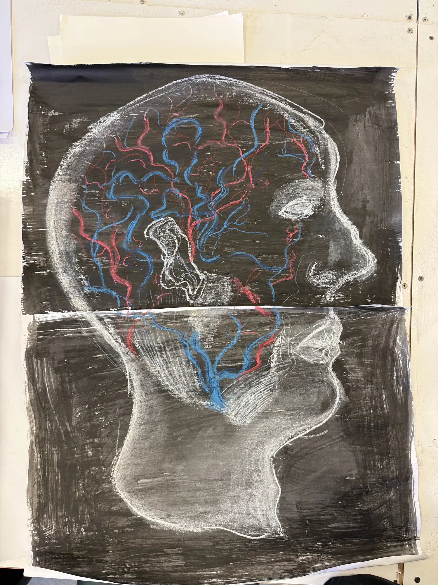
A large-scale drawing visualising internal signals, stress and thought pathways through red and blue movement lines.

Using hand forms and rubbed textures to study touch, spatial memory and material detail.
Case Study 01 / UX Design
A medication support app designed to help older adults with chronic conditions scan, review, edit, remind and share medication information with more confidence.
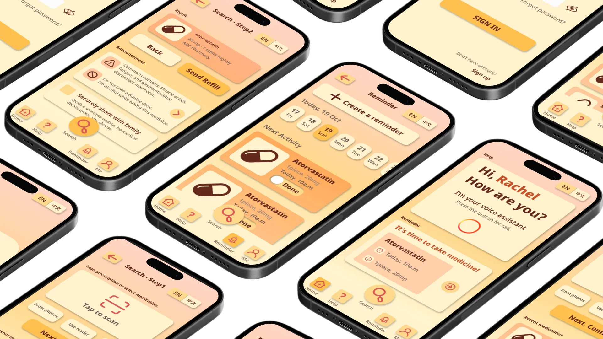
Overview
MedEasy was designed through a process of secondary research, lo-fi wireframing, and iterative usability testing to reduce the cognitive load placed on older adults managing complex medication regimens.
01 / Challenge
Older adults aged 60+ with chronic conditions. Including users with bilingual needs, low digital confidence, vision issues, or tremor
Older users may accidentally tap the wrong area or miss important details during a refill.
Medication names, dosage, pharmacy details, and warnings need to be clear without overwhelming the user.
The interface needed to work across languages, low confidence, vision changes, tremor, and unstable internet connection.
02 / Process
Timeline from research to iteration.
Analyze forums and communities to understand common barriers that elderly people face when using digital tools.
Core requirements: reduced steps, large-sized controls, clear language, and better feedback.
Create low fidelity prototypes for login, homepage, dispensing steps, reminders, and personal information.
Remote verbal thinking test with four participants（Think-aloud sessions）
Simplify visual guidance, reminder location, and offline feedback based on user behavior.
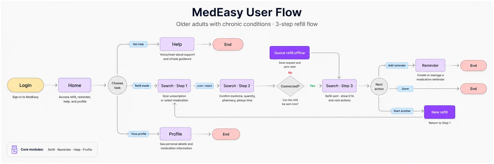

03 / Features

04 / Iteration
Before → After
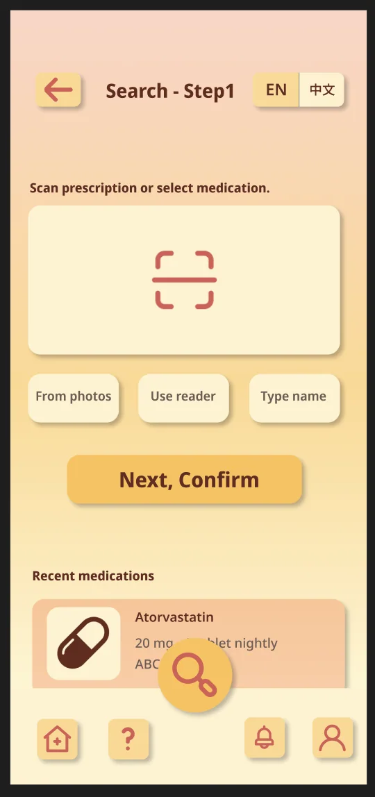
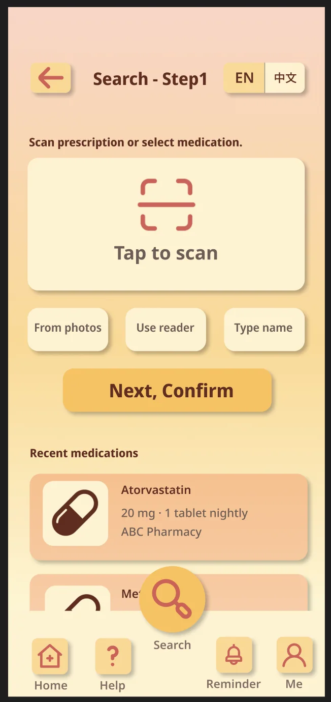
05 / Reflection
Small details such as labels, feedback, touch size, and action placement can strongly affect whether older users feel safe continuing a task.
This project helped me understand that accessibility is not only about adding features, but about reducing uncertainty at each step. For older adults, a successful interface needs to feel predictable, forgiving, and respectful. My biggest design decision was to make the refill process narrower, not broader: fewer steps, clearer actions, and stronger feedback.
Physical-digital airport companion →
Case Study 02 / Group Project
AirPal is a wearable airport companion for first-time solo travellers. It combines quick-access storage, a foldable screen, real-time guidance and support access to make airport journeys clearer and less stressful.


00 / My Contribution
Helped shape AirPal as a wearable crossbody bag instead of only a screen-based apps.
Explored the waist bag form, 90° foldable screen, quick-access storage, and light/vibration alerts through sketches and product-detail thinking.
Helped interpret testing feedback.
01 / Problem
First-time solo travel is not only about finding information. It is about knowing what to do next.
Airports can overwhelm first-time solo travellers with unfamiliar layouts, time pressure, security rules, gate changes and limited support. Our design challenge was to reduce uncertainty by making the next action visible, simple and reassuring.
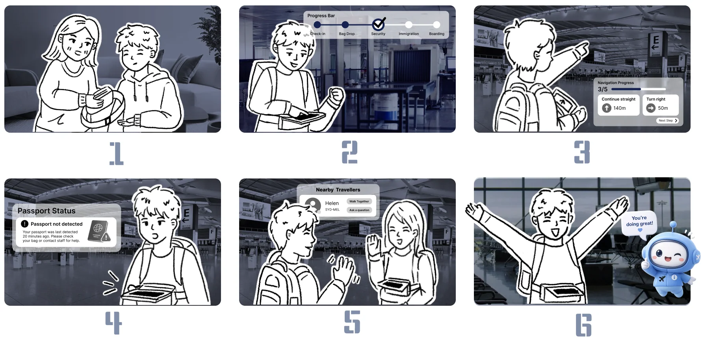
02 / Concept
A physical-digital solution, not just another phone interface.
AirPal is a crossbody / waist bag with a foldable glanceable screen. It keeps passports, boarding passes, cards and phones close, while providing journey guidance, flight updates, navigation prompts and support options.
Keeps key travel items easy to reach during security and boarding.
Allows glanceable viewing while walking, standing or waiting.
Uses light, vibration and audio to notify users in noisy airport environments.
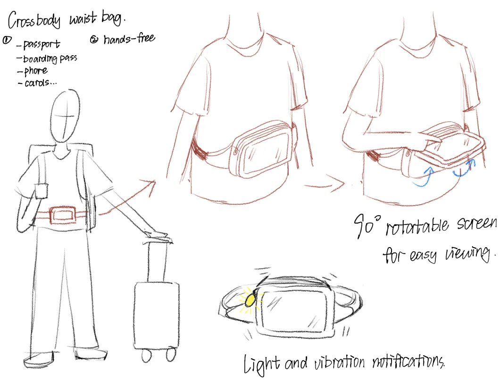
03 / Solution
Focused on the airport moments where users feel most uncertain.
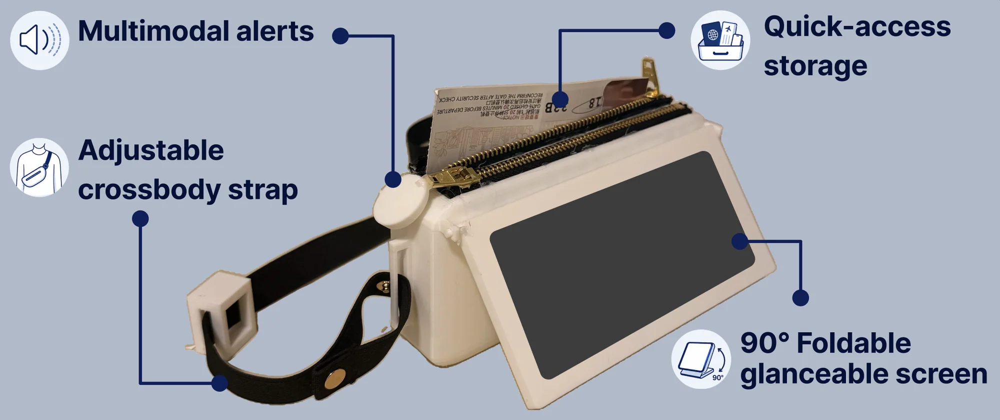
04 / Testing
Scenario-based testing helped us see how users acted under pressure.
We tested AirPal with 5 proxy users in a busy user testing fair environment. The methods included think-aloud, role-play tasks, SUS survey and short interviews.
Users followed on-screen guidance to remove the correct items under time pressure.
Users followed instructions to reach the boarding gate, but distance-only directions were confusing.
Users responded quickly to the alert and chose support options to solve the problem.
Good overall usability, with room to simplify navigation and menus.
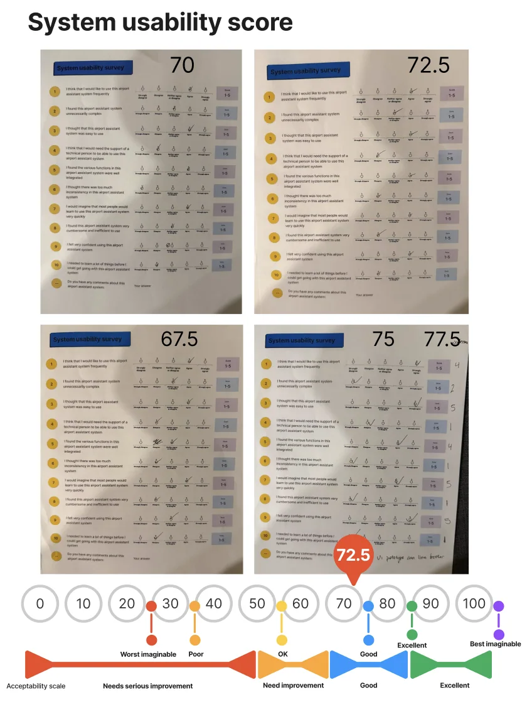

05 / Interface Iteration
From messy screens to clearer guidance.

06 / Future Direction
What I would improve if the project continued.
Use landmarks like “towards Starbucks” instead of only metres and arrows.
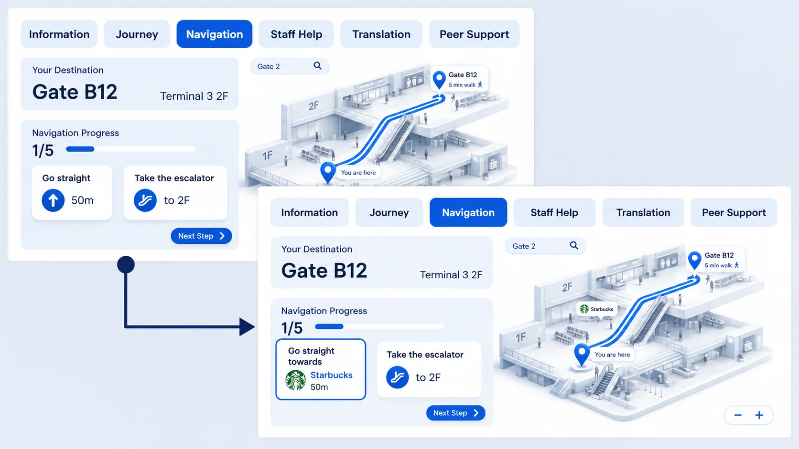
Group functions into Journey, Navigation and Support to reduce decision-making pressure.

Add calming materials, friendly feedback and small rewards to make the journey feel less stressful.

07 / Reflection
Useful design is not about adding more functions. It is about making the next step clearer.
AirPal helped me understand how physical form and interface design need to work together. My key learning was that in stressful environments, a product should reduce choices, guide one action at a time, and provide reassurance before users feel lost.
2026 visual experiments and personal practice →
Move the mouse or use ← → to catch new ideas. Avoid the red bugs.